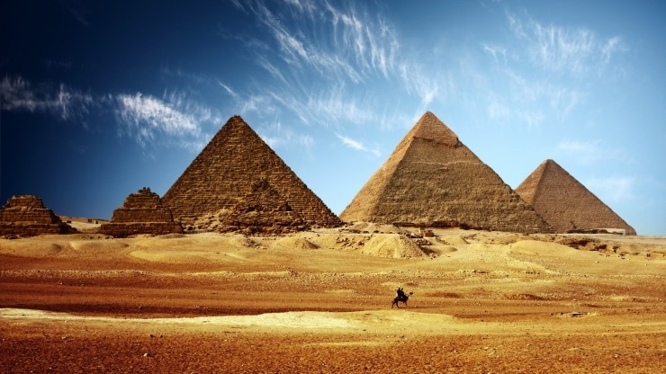
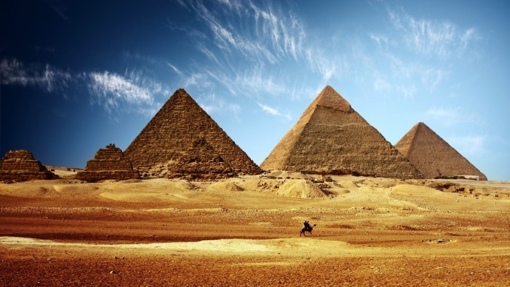

이집트
나일 강과 넓은 사막이 존재. 고대 이집트 문명은 나일 강 주변의 기름진 평야에서 이루어짐
도시 : 카이로(수도), 멤피스, 기자, 알렉산드리아, 아스완, 룩소르
세계유산 : 카르나크 신전, 이집트 박물관, 성 카타리나 수도원
나일 강과 넓은 사막이 존재. 고대 이집트 문명은 나일 강 주변의 기름진 평야에서 이루어짐
도시 : 카이로(수도), 멤피스, 기자, 알렉산드리아, 아스완, 룩소르
세계유산 : 카르나크 신전, 이집트 박물관, 성 카타리나 수도원
